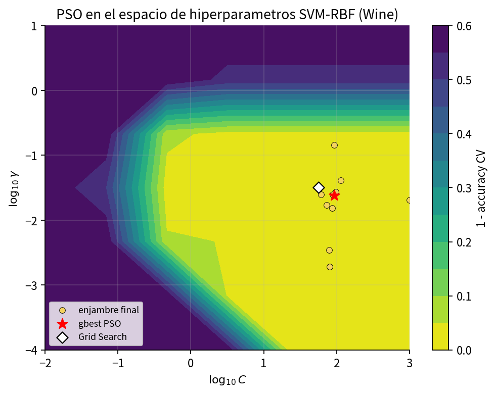
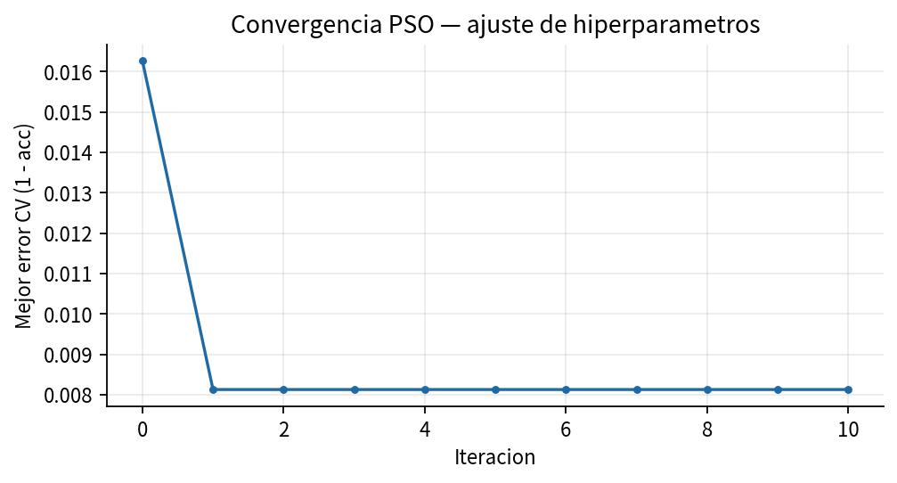
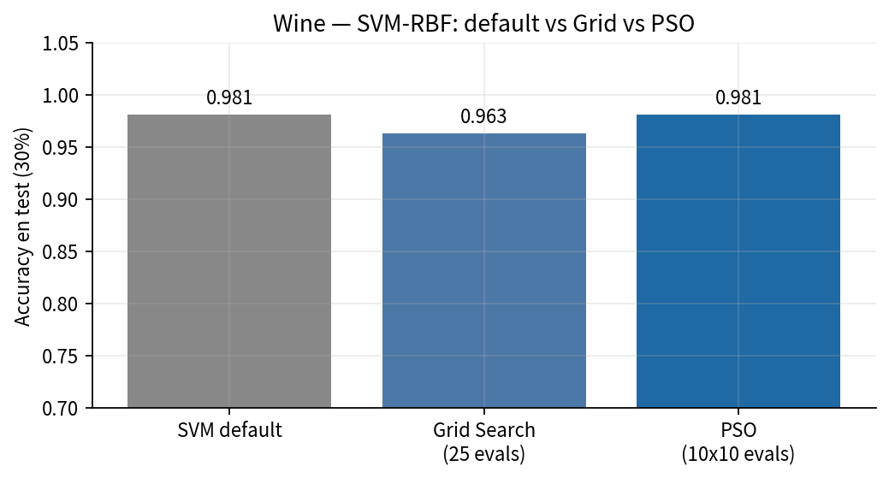

Las 13 variables químicas del vino permanecen fijas. Lo que se optimiza son dos hiperparámetros del clasificador, no los descriptores del dato.

Tablero de hiperparámetros. No representa composición química.

El mejor error de validación se estabiliza desde la primera iteración.

Tres configuraciones sobre la misma partición 70/30.
La partícula es (log10 C, log10 γ) en [−2, 3] × [−4, 1]. El logaritmo iguala órdenes de magnitud. J = 1 − Acc_CV se minimiza: es el complemento del acierto, no una ley física.
Malla 5 × 5 = 25 evaluaciones. Solo pisa nodos. PSO camina en continuo; de ahí que estrella y rombo no coincidan.
| Método | C | γ | Test |
|---|---|---|---|
| SVM por defecto | 1 | automático | 0.981 |
| Grid 25 eval. | nodo de malla | nodo de malla | 0.963 |
| PSO | ≈ 92.3 | ≈ 0.0237 | 0.981 |